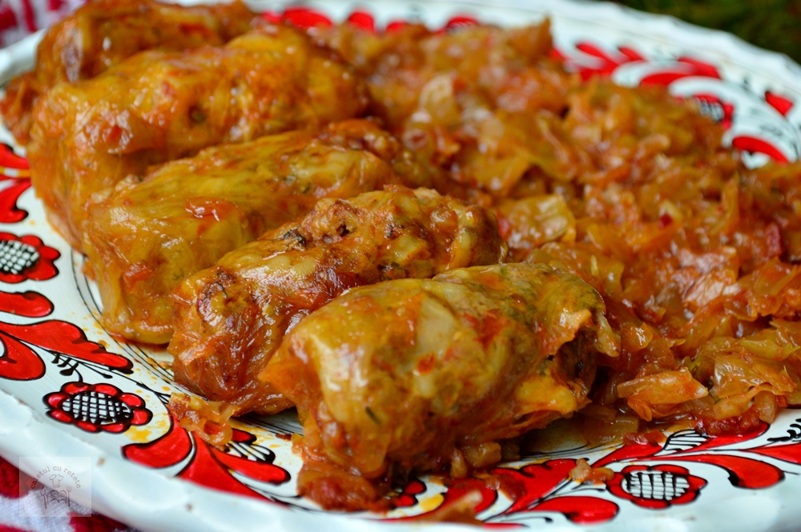

Sarmale

Description
Sarmalele sunt printre cele mai apreciate mancaruri in Romania si putini sunt cei care ar refuza o portie de
sarmale aburinde, cu smantana si mamaliguta langa. Desi este un fel de mancare considerat traditional romanesc,
el de fapt isi are radacinile in Imperiul Otoman. Cuvantul „sarma” provine din limba turca - „sarmak” si se
traduce prin „a infasura, inveli”.
Sarmalele se prepara din Orientul Mijlociu pana in Balcani si Europa Centrala, insa retetele au suferit de-a
lungul timpului mici modificari si se prepara in mod diferit in fiecare tara. Preparate asemanatoare cu
sarmalele sunt dolma, gołąbki sau holishkes. In meniuri in restaurantele internationale gasim sarmalele sub
numele de „cabbage rolls”.
In Romania, sarmalele se bucura de o apreciere in toate regiunile tarii si sunt considerate o mancare cu un
simbolism aparte. Chiar si oala de sarmale din lut are un loc privilegiat in bucatariile romanilor, se regaseste
in majoritatea caselor si este considerata un element de baza in obtinerea gustului autentic de sarmale.
Ingredients
- 500 de grame de carne de porc tocata
- 2 cepe
- 1 morcov
- 1 ardei gras rosu
- 200 de grame de orez
- 1 lingura de bulion
- 1 ceasca de suc de rosii
- 500 ml bors acru
- 1-2 verze murate
- 4 linguri de ulei
- Marar si patrunjel verde
- Sare, piper, boia
Steps
- Se separa frunzele de pe varza murata si se clatesc cu apa. Ceapa se toaca marunt si se caleste in ulei,
apoi se adauga morcovul si ardeiul taiate marunt. Cand ceapa devine transparenta si morcovul se inmoaie, se
adauga bulionul si se mai tin pe foc cateva minute. Dam tigaia deoparte si lasam legumele calite sa se
raceasca.
- Intr-un bol mare se pune carnea tocata, orezul bine spalat inainte, apoi ingredientele calite si verdeata
tocata, sare, piper, boia. Atentie, la adaugarea sarii, foile de varza murata sunt deja sarate, asa ca nu
trebuie sa exagerezi cu acest condiment. Compozitia se amesteca foarte bine si se pune cate o lingura de
compozitie in fiecare foaie de varza si se impatureste.
- Pe fundul oalei de lut in care urmeaza sa fie fierte sarmalele se pun varza tocata, crengutele ramase de la
patrunjel si marar si foile de dafin. Apoi se adauga sarmalele in straturi. Peste ele se toarna apa si bors,
cat sa le cuprinda, apoi sucul de rosii. Oala se pune pe foc la intensitate mica pentru 1-2 ore. Daca
lichidul in care fierb sarmalele scade, se adauga apa fierbinte. Sarmalele se gusta dupa prima ora de
fierbere, apoi se mai verifica de cate ori crezi ca este necesar.